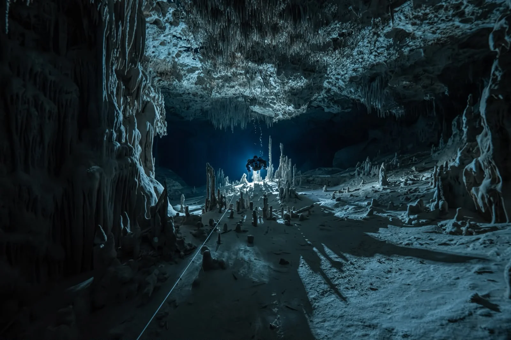
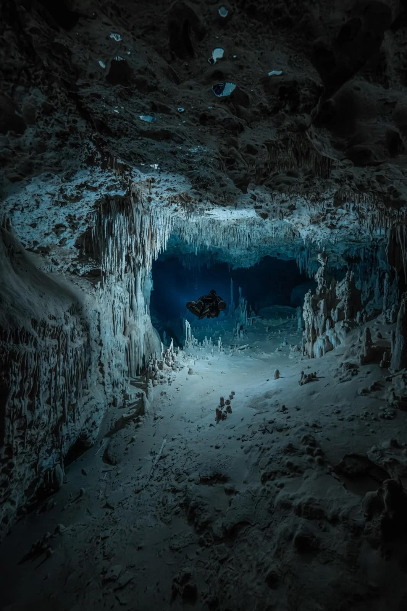
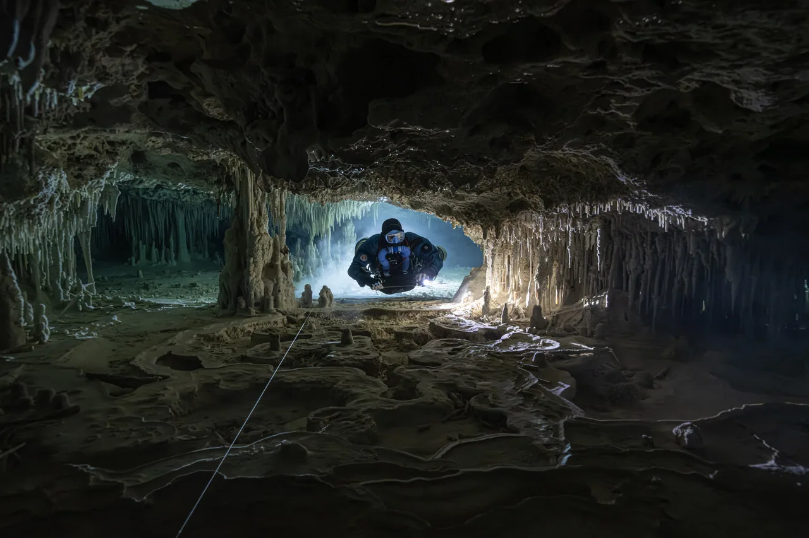
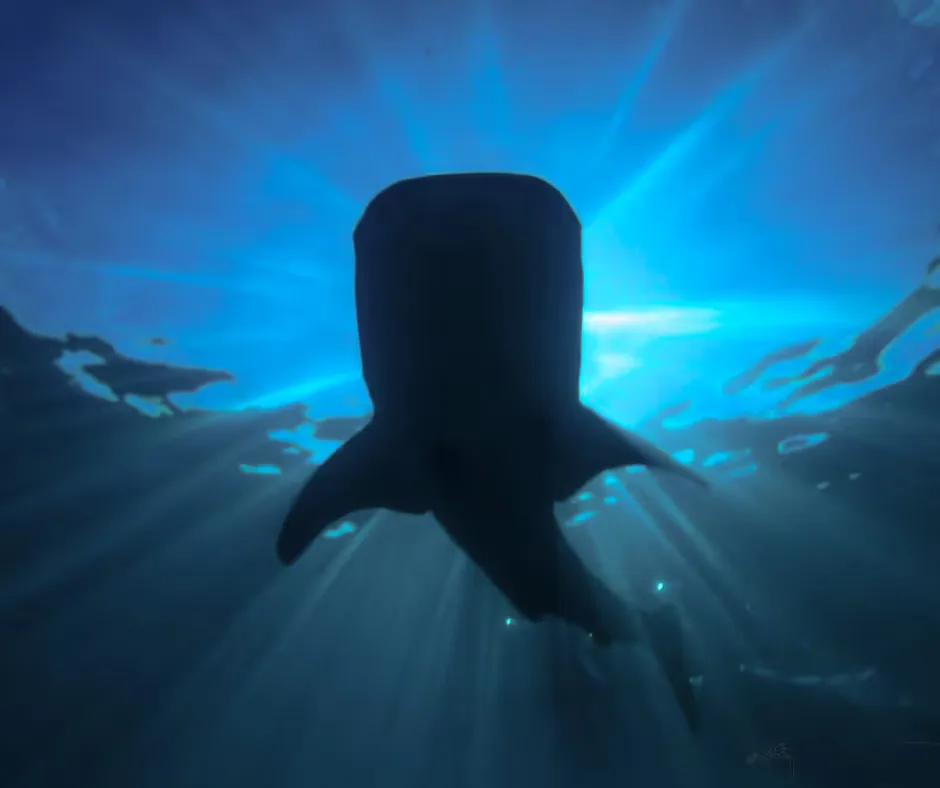
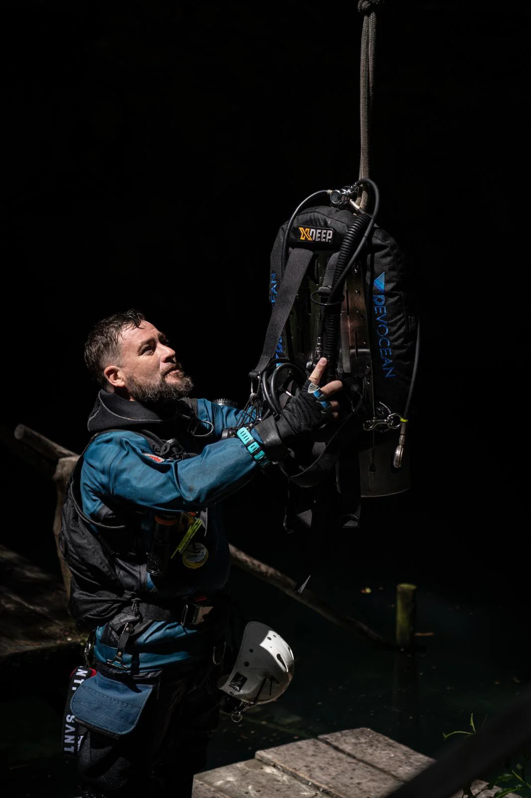
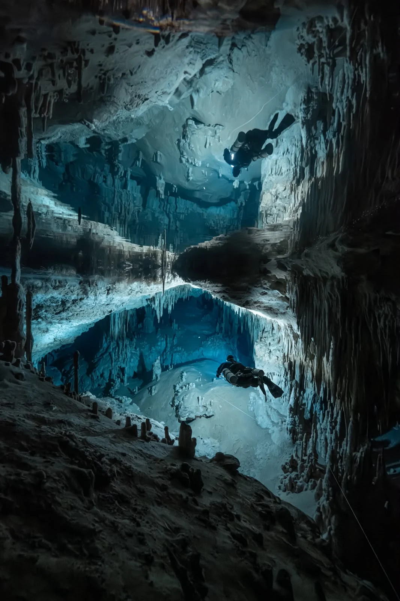
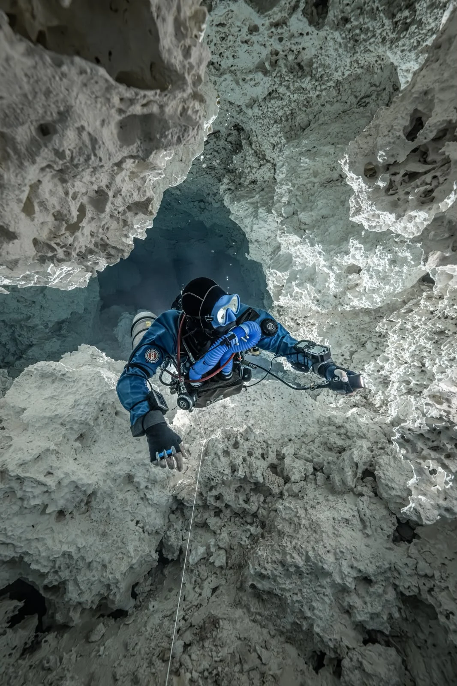
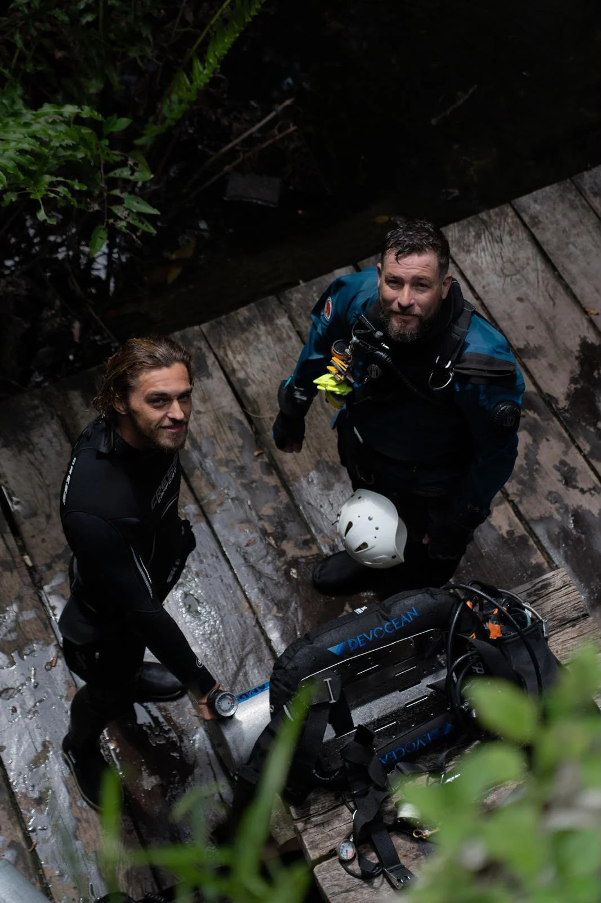

For certified divers
For certified diversSunlit caverns. Crystal-clear water. A different side of Mexico.
From 2,600 MXN2 dives · entrance fees extra

PLAYA DEL CARMEN · MEXICO
Cenotes, Caribbean reefs and cave adventures.
Personal diving experiences with Devocean.
From your first underwater breath to your next cave expedition. There’s a dive for you.
For certified diversSunlit caverns. Crystal-clear water. A different side of Mexico.
 Reefs & wrecks
Reefs & wrecksCaribbean reefs, turtles and the underwater world of Cozumel.
 No certification needed
No certification neededStart with the basics. Discover the feeling of breathing underwater.

For cave-certified diversExplore beyond the light zone with a guide and a plan built around you.
 November–March
November–MarchA close look at Playa del Carmen’s seasonal underwater visitors.

Qualified CCR diversGuided CCR diving in the cenotes and caves of Quintana Roo.
 Technical divers
Technical diversOcean and cenote exploration for divers ready for a technical approach.

Snorkelling excursionA boat day and a snorkelling experience with remarkable marine life.
Explore your options.
All diving experiences
Explore Mexico’s extraordinary cave systems with personal guiding and specialist training, matched to your certification and experience.
Discover cave divingYou bring the curiosity.
We’ll help with the rest.
Walter and Dorianne lead a personal dive operation in Playa del Carmen. Small groups, thoughtful planning and time to make every dive your own.
With PADI and IDF Course Director experience and specialist cave and technical instruction, Walter supports divers from their first course to professional training.
Meet Walter & Dorianne
Walter is an incredible dive instructor.
The experience with Walter was just wonderful.
They made every detail seamless…
Tripadvisor rating checked October 2026. Review excerpts shown above.
More guest storiesPress play for a closer look at Devocean’s world.
A journey through Mexico’s underwater caves · 52 sec

Learn to dive in Mexico, develop your skills or turn your passion into a profession.
Explore all coursesPADI · IANTD · IDF training pathways
Start with the published rates. We’ll confirm availability and the complete price before you book.
See all prices & inclusions

Yes — the Try-Dive experience starts with exercises in a pool or cenote and continues with an open-water dive. Tell us about your experience so we can recommend a suitable introduction.
For guided cavern excursions, Devocean requires at least Open Water certification and a minimum age of 15. Bring your certification card. Cave diving beyond the light zone requires separate cave training and certification.
Inclusions depend on the experience. Cenote entrance fees, camera fees and guide tips are additional. We will confirm equipment, course materials, certification costs and any other charges in your personal quote.
Send your dates, the number of divers, your certification level and the experiences you’re interested in. We’ll confirm availability, meeting arrangements, the full price and the applicable deposit and cancellation terms before you commit.
Have dates in mind? A place you’d love to explore? Tell us a little, and we’ll help you find the right experience.

We may be underwater when you get in touch. We’ll reply when we’re back.